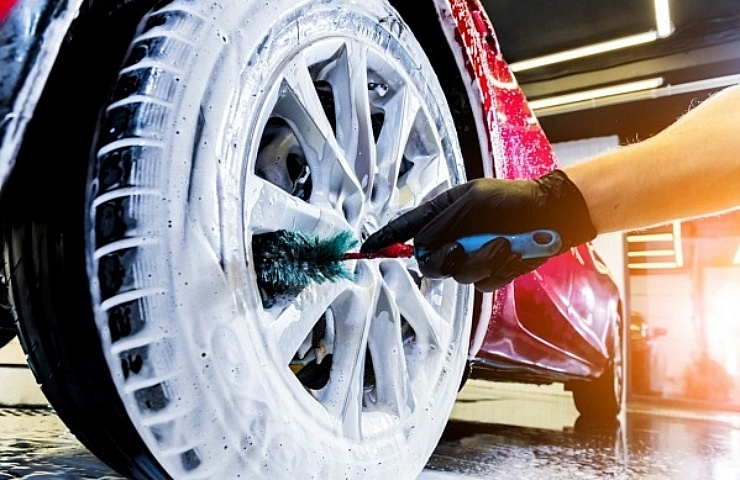
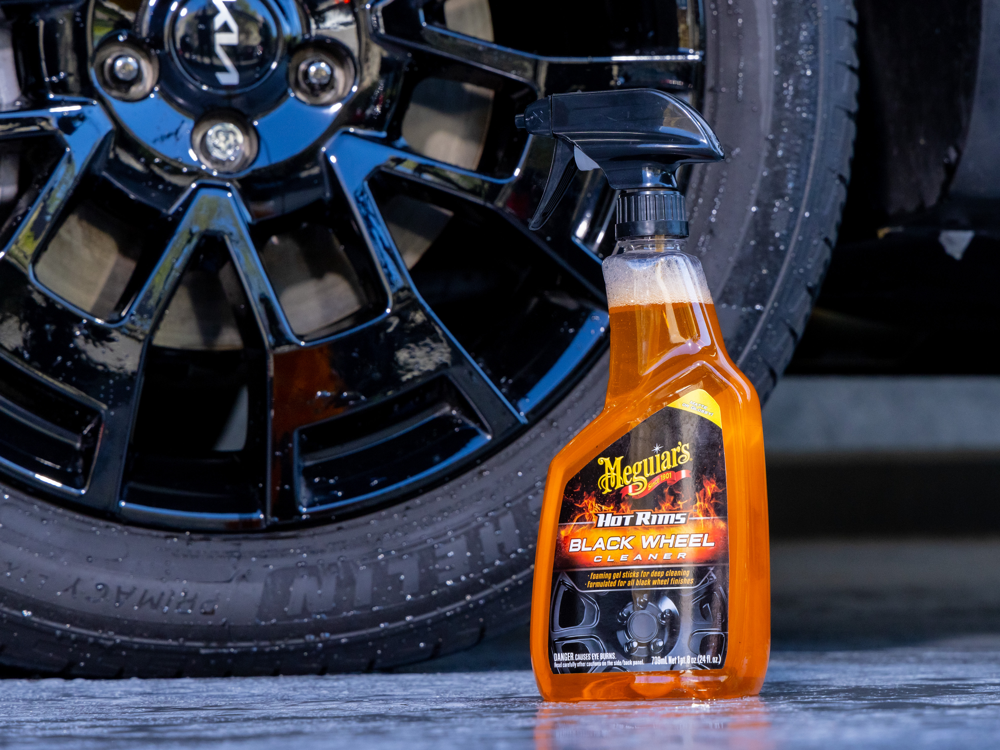
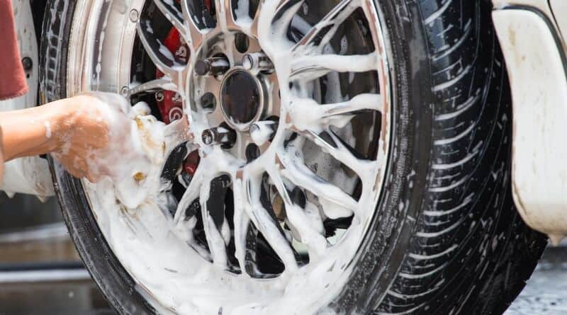
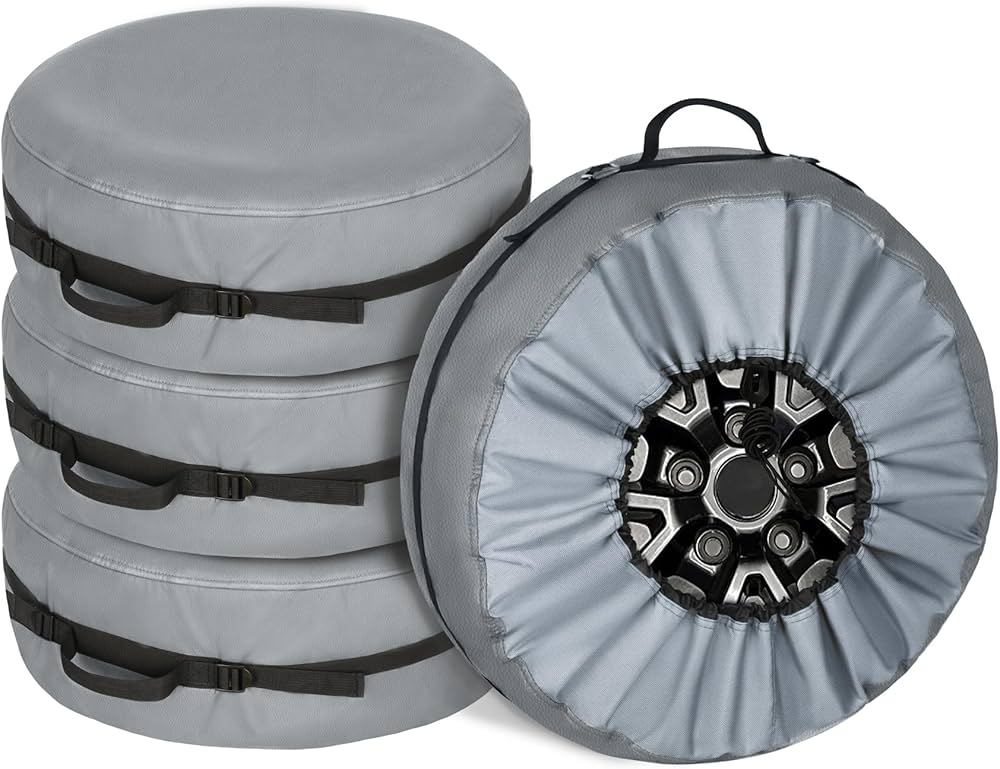
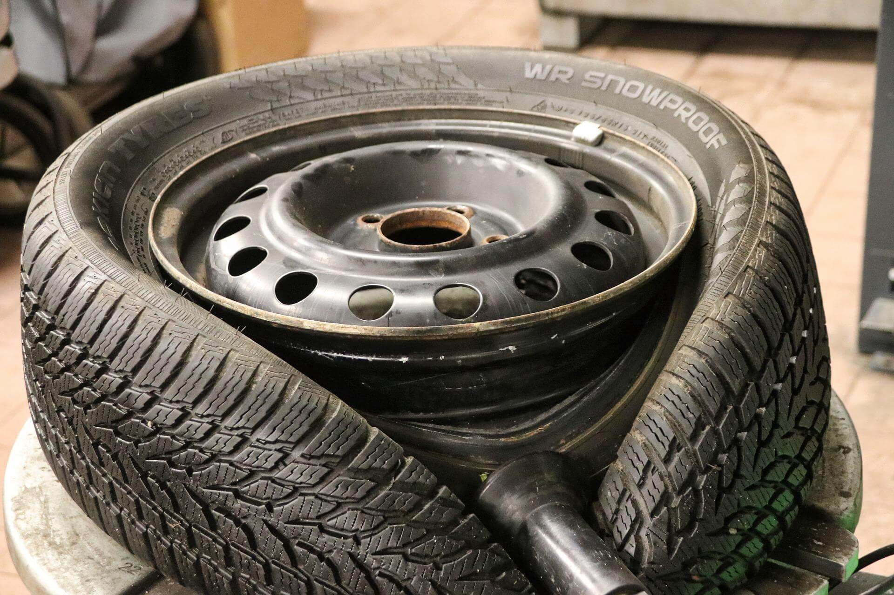

Vzdrževanje platišč
Zakaj je pomembno vzdrževanje?
Redno vzdrževanje platišč ni pomembno le zaradi izgleda, ampak tudi zaradi njihove trajnosti in varnosti. Sol, umazanija in zavorni prah lahko poškodujejo površino platišč, kar vodi v korozijo in zmanjšano življenjsko dobo.
Pravilno čiščenje
Uporabljaj le čistila, ki so namenjena za aluminijasta ali kovinska platišča. Izogibaj se agresivnim kemikalijam, saj lahko poškodujejo zaščitni sloj. Uporabi mehko krtačo ali gobico in vedno speri s čisto vodo.
Zaščita s premazi
Po čiščenju platišč lahko naneseš zaščitni premaz ali vosek za kovine, kar bo preprečilo nabiranje umazanije in olajšalo naslednje čiščenje. Takšni premazi dodatno ščitijo pred soljo in vlago.
Shranjevanje izven sezone
Če uporabljaš ločen komplet zimskih in letnih platišč, jih shrani v suhem in temnem prostoru. Priporočljivo je, da jih pred shranjevanjem temeljito očistiš in zaviješ v zaščitne prevleke.
Redni pregledi
Ob vsakem menjavanju pnevmatik vizualno preglej platišča za razpoke, ukrivljenost ali poškodbe laka. Pravočasno popravilo ali zamenjava platišča lahko prepreči hujše posledice.
Povzetek
- Redno čiščenje
- Platišča čistite pogosto, da odstranite sol, zavorni prah in umazanijo ter preprečite korozijo.
- Uporabljajte primerna čistila in mehko krtačo ali gobico, izogibajte se agresivnim kemikalijam.
- Zaščita s premazi
- Po čiščenju nanesite zaščitni premaz ali vosek, ki olajša naslednje čiščenje in ščiti pred škodljivimi vplivi okolja.
- Shranjevanje izven sezone
- Platišča shranjujte v suhem in temnem prostoru, pred tem jih temeljito očistite in po možnosti zaščitite s prevlekami.
- Redni pregledi
- Ob menjavi pnevmatik preverite platišča za poškodbe, razpoke ali ukrivljenost in pravočasno ukrepajte.